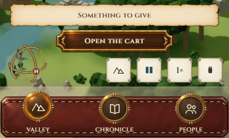
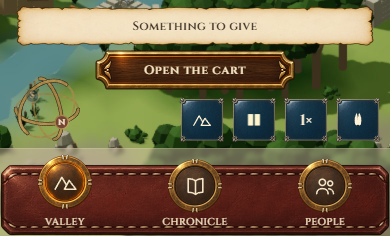
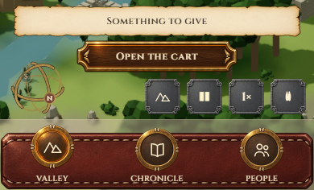

A · Marfil
Elegida por Vera: clara, con canto de plata.

B · Pizarra azul
Alternativa conservada.

C · Hierro
Alternativa conservada.

Marfil elegido por Vera · todas las variantes conservadas · la navegación mantiene sus medallones de latón
Elegida por Vera: clara, con canto de plata.

Alternativa conservada.

Alternativa conservada.

GIVE, SEND y OPEN THE CART conservan su acabado hasta confirmar el alcance del cambio.